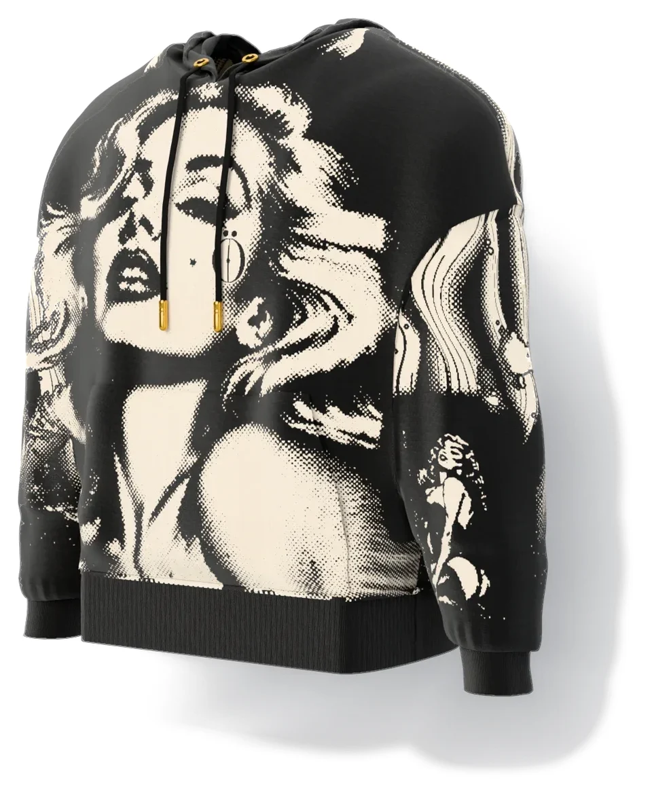
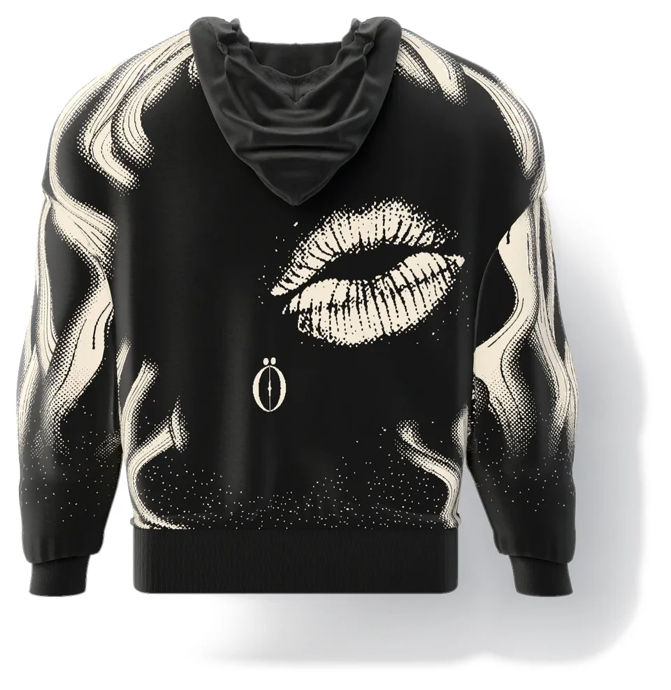
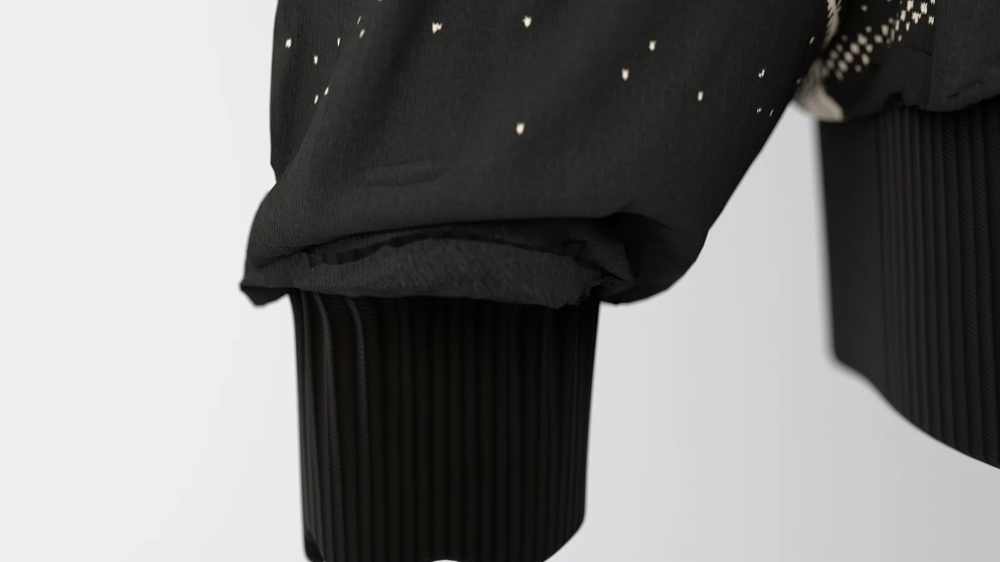

STAND-IN · img/heliodora/front/master.* (departments/apparel/new-pieces-2026-11/build/muse-allover/site/muse_front_16k.png; 16K, 8640 × 15360)
STAND-IN · img/heliodora/front/master.* (departments/apparel/new-pieces-2026-11/build/muse-allover/site/muse_front_16k.png; 16K, 8640 × 15360)
STAND-IN · img/heliodora/three-quarter/master.* (three-quarter view, 8K; 8K, 4320 × 7680)
STAND-IN · img/heliodora/back/master.* (back view, 8K; 8K, 4320 × 7680)
 STAND-IN · img/heliodora/detail-material/master.* (the knit at stitch scale, 8K close-up; 8K, 7680 × 4320)
STAND-IN · img/heliodora/detail-material/master.* (the knit at stitch scale, 8K close-up; 8K, 7680 × 4320)
Chapter I · Knitwear
Heliodora
Knit hoodie
Knitted edge to edge, as a close-up fills the screen: her face on the front, her hair over the shoulders, and on the back the kiss, signed with the Ö.
- KNIT
- 28-GAUGE DOUBLE JACQUARD
- WEIGHT
- 300 GSM
- YARN
- 30S COMBED COTTON
- COLOURWAY
- BLACK / CREAM
- SIZE
- S · M · L · XL · XXL
Made to order. Delivery date confirmed by email.
Delivered in the house box.
Details
- Made to order
- Made to order. We email your delivery date once production is confirmed. Cancel for a full refund any time before production starts.
- Returns
- Size exchanges within 14 days of delivery, unworn and with tags. Returns
- Care
- Wash cold, inside out, on a gentle cycle. Dry flat. No tumble dryer, no bleach. Care
- Size
- The measurements
 STAND-IN · img/heliodora/world/master.* (C1: the last frame, the world plate (the lobby); 8K, 5760 × 7680)
STAND-IN · img/heliodora/world/master.* (C1: the last frame, the world plate (the lobby); 8K, 5760 × 7680)Where it is going · C1
The lobby
The curtain to the house, tied back.
On the screen in the film, the picture is tomorrow: each piece in the place it is going, with one place kept for someone.
The maker’s notes
Heliodora, the Muse
- It begins as a chart, one value for each stitch: the front alone is 722 stitches by 1,030.
- It is knitted as a 28-gauge double jacquard in black and cream, 11 stitches by 16 rows to the centimetre.
- Her portrait is the front; her hair runs onto the sleeves and thins to single dots by the cuff.
- On the back, one kiss, 208 by 133 mm, tilted 12 degrees, the mark beside it at 6.0 by 4.8 cm.
- Round them, 80 mm of plain black. Dust rises from the hem and stops at 31% of the height.
- The hood is plain black. It closes on black cords through brass eyelets, ending in brass tips.
Behind it: a second bed of stitches. Every stitch is knitted front and back, so no loose thread crosses the inside.
Read the poem